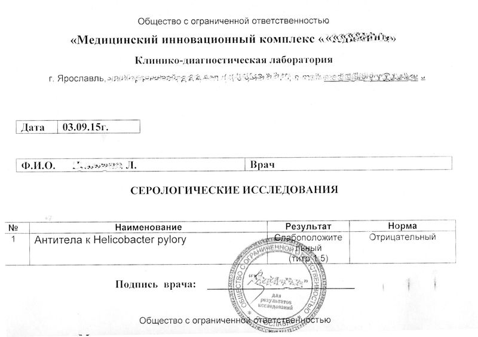
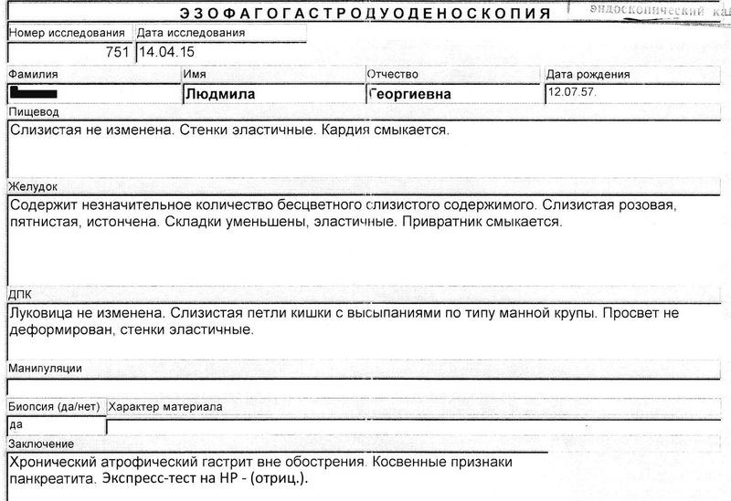
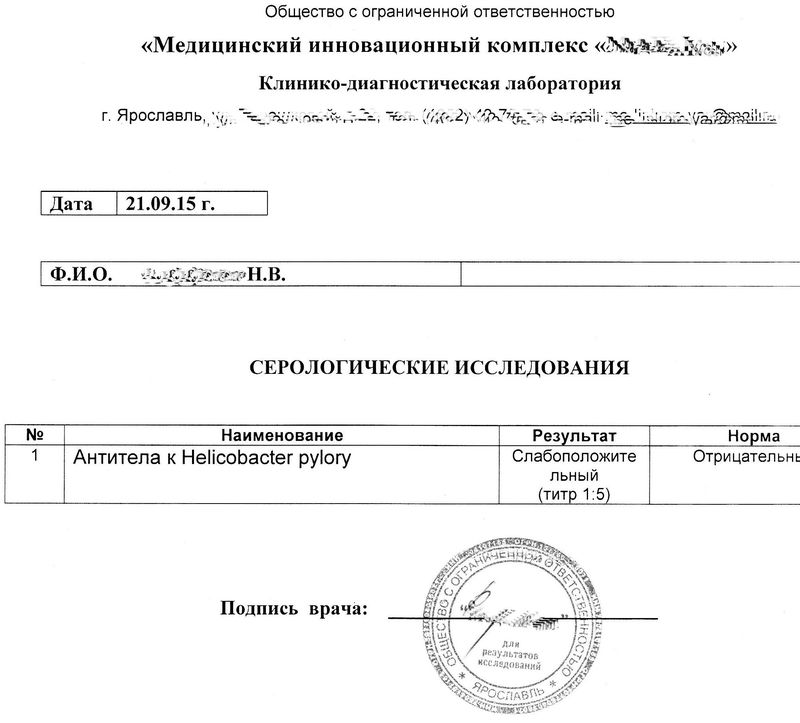
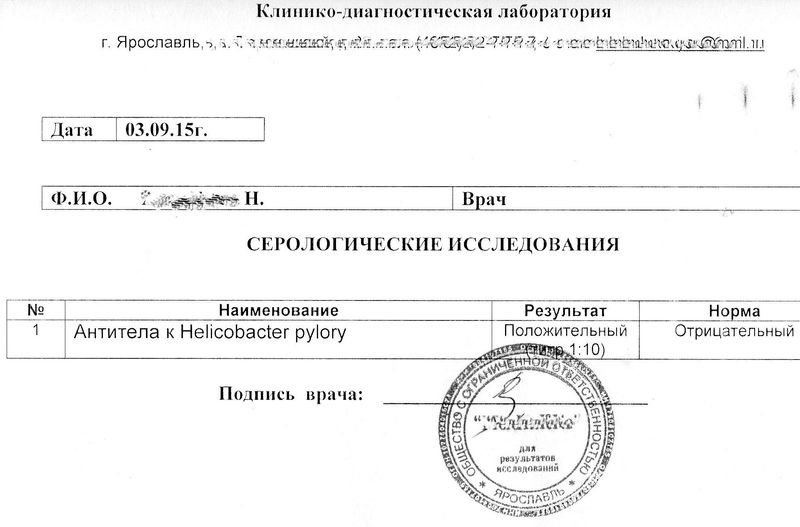

«...увидеть многомерность Пространства, в котором правит совсем не энергия, как характеристика Проявленного плана,
а информация, для которой не существует времени, предела скорости распространения и непреодолимых препятствий!»
(«Откровения людям Нового века», Послание от 04.05.12, стих 18, книга IX).
Понимание глубины данного постулата относится и к микромиру (бактерий, вирусов, паразитов, грибков) и приоткрывает занавес, что «покоряя» Космос, человек бессилен перед раком и тяжёлыми вирусными заболеваниями. Скрываясь в пространственных уровнях совершенного организма они могут не только годами приносить непоправимый ущерб, но и в короткий срок привести к летальному исходу.
Новые парадигмы Мироустройства, макро и микрокосмоса меняют вектор восприятия и понимания многоуровневости всего Пространства. Например, изменение приоритетов в микробиологической сфере происходит от представлений об одноклеточности микроорганизмов к теории о микробных колониях, как целостных единых организмов обладающих эффектом кворума. Учёные мирового сообщества выдвигают научно-обоснованную концепцию, что микробы, бактерии и вирусы обладают свойствами межклеточной коммуникации, пространственной обособленностью, умением интегрироваться и влиять на параметры окружающей среды.
Клеточные кластеры микроорганизмов имеют не только структурно-образующую систему и не теряют своей непрерывности при локальных изменениях, препятствиях или блокировании. Например, когда барьер остаётся позади колонии, то структуры формируются за этим препятствием по тем же геометрическим законам, как и в других участках колонии.
Преодоление генетического дефекта во много раз ускоряется, если рядом имеются здоровые колонии. Сформировавшиеся «взрослые» пространственные сгустки (бактерий, вирусов) заставляют молодые клетки через коммуникативные агенты, перестраивать интенсивно систему под «взрослые», т. е. формировать внешние концентрические кольца без предварительного формирования внутренних колец.
Холдинг «Научно-исследовательский институт Здоровьесберегающих технологий» взяв за основу, что микроорганизмы имеют сложные внутри-колониальные информационные коммуникации, так как по мере развития и расширения имеют тенденцию к синхронизации поведения отдельных клеток к безукоризненной колонии с циркулярной симметрией; то для научного исследования, неинвазивной диагностики и лечения энерго-информационным методом взяли — Helicobacter pylori (Хеликобактер пилори), что в переводе означает «микроб желудочно-спиральный». Долгое время считалось, что эта хроническая инфекция является безобидным сапрофитом, помогающим формированию слоя ощелачивающейся карбонатной слизи, которая ограждает от отрицательного воздействия кислоты на стенки желудка.
В 2005 году австралийским учёным Робину Уоррену и Барри Маршалу присудили Нобелевскую премию в области медицины и физиологии за открытие бактерии Хеликобактера пилори. С открытием изменилось и отношение врачей к происхождению различных воспалительных и язвенных заболеваний двенадцатиперстной кишки и желудка, например гастрит и язва. Микроорганизм может длительное время не давать о себе знать, но при длительной персистенции возможно перерождение в рак. Благодаря своей спиралевидной форме и жгутикам он ввинчивается в вязкий слой слизи и в благоприятной атмосфере вырабатывает особый фермент, который дополнительно обволакивает его коконом. Хеликобактер вырабатывает специальные вещества, способные блокировать антитела, которые отправляет иммунная система. Более того, они же действуют, как токсины, разрушающие эпителий и, поэтому, являются канцерогеном номер один.
На сегодняшний день в повседневной клинической практике существуют классические методы исследования по выявлению патогенной инфекции:
- серологический или иммуноферментный метод, определяющий наличие специфических антител или иммуноглобулинов классов IgM и IgG в сыворотке крови, вырабатываемых организмом, при активизации возбудителя;
- уреазный или дыхательный определяет степень инфицированности бактерией – по количественному содержанию аммиака в выдыхаемом воздухе;
- эндоскопический метод, который позволяет на основании гистологического, бактериологического или цитологического анализа, выявить количественные показатели обсемененности, а так же оценить наиболее выраженные морфологически изменения слизистой оболочки желудка.
Ярославский НИИ ЗСТ обследовал большую группу пациентов, с целью выявления патогенного микроорганизма Хеликобактер пилори с комбинацией различных диагностических методов, позволяющих глубоко оценить общее состояние организма и определить дальнейшие методы лечения. Пациенты с положительным результатом были разделены на 2 экспериментальные группы. Для определения эффективности лечения, с учетом клинических проявлений гастроэнтерологических симптомов, сопутствующих заболеваний и индивидуальных особенностей, классическим способом и немедикаментозным методом.
Первая группа получала хеликобактерную терапию согласно рекомендациям специалистов в области гастроэнтерологии, включающая 2 вида антибиотиков и противоязвенный препарат с бактерицидной активностью.
Вторая группа получала хеликобактерную терапию информационно-инвертируемым препаратом на основе воды, которая является здоровьесберегающим фактором для фунциональных состояний организма. Разработанный метод действует целенаправленно, в форме «деструкции», или угнетении функционального состояния микроорганизмов собственной инвертируемой информацией, воспринимаемой как свою собственную.
Например, у пациентки, исследования нелинейной диагностики, показали наличие Хеликобактера пилори и были подтверждены иммуноферментным анализом, с положительным результатом IgG титра 1:5 (рис 1). В анамнезе хронический антральный гастрит, хронический некалькулезный холецистит, панкреатит, артериальная гипертензия. Показатели общего биохимического анализа, выявляют наличие признаков системного воспалительного процесса.
Рисунок 1
Дальнейшее лечение было проведено информационно-инвертируемым препаратом (в течение 2 недель).
После информационной терапии, повторный иммуноферментный анализ крови на наличие инфекции был с отрицательным результатом. Более того, отмечается общее улучшение состояния здоровья, снижения абдоминальных болевых ощущений, появления аппетита.
Метод информационного воздействия позволяет не только исключить негативные последствия от воздействия антибиотиков, но и быстрее сформировать устойчивый иммунитет к различным инфекционным агентам.
У другой пациентки выявление Хеликобактера пилори не только методом нелинейной диагностики, но и эндоскопической гастродуоденоскопии (ФГДС) с цитологическим изучением фрагментов слизистой оболочки желудка и двенадцатиперстной кишки. Определена степень III высокая (+++), обсемененности, покраснение слизистой оболочки желудка, отек, обильное наличие слизи, атрофический гастрит в стадии обострения. В анамнезе диффузные изменения поджелудочной железы, гипотония.
Лечение осуществлялось информационно-инвертируемым препаратом, в течение 2 недель.
В результате лечения, данные повторной Эзофагогастродуоденоскопии и нелинейного анализа полностью коррелируют, подтверждая отсутствие инфекции положительной клинической динамикой слизистой оболочкой желудка. Слизистая ровная, пятнистая, истончена, складки уменьшены, эластичные. Хронический атрофический гастрит вне обострения (рис. 2 до лечения и после).
Рисунок 2
В одном из многих других случаев, у пациентки, через исследования нелинейной диагностики, указывающие на наличие бактерии были подтверждены иммуноферментным анализом, с положительным результатом IgG титра 1:10 (рис. 3).
Рисунок 3
В анамнезе полипозный хронический гастрит с пониженной с секреторной недостаточностью. Общеклинический анализ крови, сделанный параллельно, указывает на текущий воспалительный процесс, с признаками аллергических проявлений.
Дальнейшее лечение (под присмотром врача) включало 2 вида антибиотиков и противоязвенный препарат с бактерицидной активностью. Так же, препараты с пробиотическим действием, помогающие создать благоприятные условия для формирования кишечной микрофлоры.
Повторный иммуноферментный анализ диагностики выявил наличие Хеликобактер пилори, но уже в меньшем титре 1:5 (рис 4). Методом энерго-информационной диагностики отметили, что организм находится в состоянии слабых резервных возможностях, как на уровне иммунитета, так и функционального состояния желудочно-кишечного тракта.
Рисунок 4
Лечение экспериментальной группы антибиотиками практически во всех случаях сопровождалось явлением побочных эффектов и снижением адаптативных ресурсов организма.
Научные исследования последних лет выявляют несостоятельность иммунной системы противостоять не только «плохим» бактериям, но и «хорошим» собственным, в результате чего происходит полное нарушение механизмов саморегуляции.
Скриниг исследований НИИ ЗСТ показал, что при лечении антибиотиками титры бактерий могут оставаться положительными еще в течение нескольких месяцев, пока информация не покинет клетку из всей саморегулирующейся системы человека.
В научной работе «Колониальная организация и межклеточная коммуникация у микроорганизмов» (А.В.Олескин, И.В.Ботвинко, Е.А.Цавкелова) авторы доказывают, что: «...структура колоний микроорганизмов служит зримым отражением её сложной многоуровневой социальной организации, включающей коллективные, охватывающие всю колонию формы поведения, когда "воля индивида" (клетки) подчиняется "воле коллектива"..."бактерии, хотя и представляют собой одноклеточные организмы, являются социальными существами, которые формируют многоклеточные ассоциации".
“Коммуникация микроорганизмов» стойкая к медицинским препаратам, становится не только ранимой, но и способна погибнуть под натиском локально направленной информации. Неинвазивный метод лечения помогает не только избавиться от отрицательных бактерий, но и восстановить иммунно-реликтовую память организма способную быстро и своевременно реагировать на чужеродную среду и постоянно самовостанавливаться!
Наталья ЛИТОВА,
Ирина ТРОФИМОВА,
Холдинг «Научно-исследовательский институт
Здоровьесберегающих технологий», Ярославский НИИ ЗСТ.
МНЕНИЕ СПЕЦИАЛИСТОВ
Пробиотики
В 2012 году было опубликовано исследование, что пробиотики могут искоренить Хеликобактер пилори из желудка. Прием пробиотиков в течение 10 дней помог 13 из 40 пациентам полностью избавиться от этой бактерии.
Пациенты получали 1,8 трлн. живых микроорганизмов следующих штаммов:
Streptococcus thermophilus,
Lactobacillus ацидофилин,
Bifidobacterium Lactobacillus Лонгум,
Plantarum,
Bifidobacteriuym Brevis,
Lactobacillus paracasei,
Bifidobacterium infantis,
Lactobaccilus Delbrueckii Bulgaricus.